Semana | Tema |
|---|---|
30 oct. al 03 nov. 2024 | - Introducción a los Paquetes y Lenguajes Estadístico. Diferencias entre interfaces gráficas (GUI) y de línea de comandos (CLI). Comparativa entre software privativo y gratuito/open source. |
- R y R-Commander. Navegación del menú. Lectura e importación de archivos de datos. Estadística descriptiva. Agrupamiento de variables. Manejo de factores. Guardado de scripts y resultados. Paquetes y plugins. | |
06 al 09 nov. 2024 | - Relación entre variables numéricas. Covarianza y representación gráfica. Limitaciones. Correlación de Pearson: interpretación del signo y la magnitud.Visualización con correlogramas. Métodos no paramétricos: correlación de Spearman y de Kendall. |
- Introducción al Modelado Estadístico. Modelo lineal general: concepto y supuestos. Bondad de ajuste y análisis de residuos. Regresión lineal simple y análisis de la varianza (ANOVA). Interpretación de los resultados. | |
13 al 16 nov. 2024 | - Regresión Lineal Múltiple. Selección de variables explicativas y control de multicolinealidad. Análisis e interpretación de residuos. |
- Confusión e Interacción. Identificación y roles de las covariables. Control y detección de la confusión. Interpretación de resultados en presencia de interacción. |
Módulo VI: Análisis Epidemiológico Avanzado
Docentes: Tamara Ricardo, Christian Ballejo
Programa de Maestría en Epidemiología para la Salud Pública

OBJETIVO GENERAL DEL MÓDULO
Comprender los fundamentos y aplicaciones de los modelos lineales generalizados —incluyendo regresión lineal múltiple, regresión logística y el modelo de Cox— para interpretar adecuadamente los resultados de análisis de datos en salud pública y apoyar la toma de decisiones.
OBJETIVOS DE LA UNIDAD
Desarrollar habilidades en el uso de la estadística como herramienta para la investigación epidemiológica.
Adquirir competencias básicas en R y RCommander para realizar análisis de datos en salud pública.
Aprender a ajustar, interpretar y evaluar modelos de regresión lineal simple y múltiple.
Comprender los conceptos de confusión e interacción, el abordaje durante el análisis y su impacto en la interpretación de resultados.
PROGRAMA DE LA UNIDAD
ESTRUCTURA DE LA CLASE
Horario | Descripción |
|---|---|
18:30hs | Ingreso a la videollamada |
18:40hs | Inicio de la clase |
20:00hs | Receso |
20:15hs | Continuación clase |
21:30hs | Cierre |
OBJETIVOS DE HOY
Conocer las características de las diferentes clases de softwares y lenguajes estadísticos.
Entender el esquema de trabajo de R + RCommander relacionado a sus paquetes y plugins, importación de datos y almacenamiento de sus archivos de trabajo
Desarrollar habilidades básicas en el análisis estadístico utilizando R + RCommander.
INTRODUCCIÓN
INTRODUCCIÓN
Existen numerosos paquetes y lenguajes estadísticos actualmente disposición.
Algunos propietarios o privativos con licencias de alto costo y otros gratuitos y/o open source (fuente abierta).
Los softwares privativos son desarrollados y comercializados por una empresa. Sólo ellos pueden modificar el código fuente y sus funciones.
- Ejemplo: SPSS, Stata, SAS, etc
INTRODUCCIÓN
- Los softwares gratuitos que son de libre uso, desarrollados por organizaciones o empresas. Sólo ellos pueden modificar el código fuente y sus funciones.
- Ejemplo: EpiInfo, EpiDat, Jamovi, etc
- Los open source que son abiertos, por lo tanto no tienen dueño. Cualquier usuario puede acceder al código fuente y modificarlo.
- Ejemplo: lenguaje R, python, julia, etc
TIPO DE INTERFAZ
GUI (Graphical User Interface): interfaz gráfica con menúes.
- El usuario interactúa con el sistema (íconos y botones).
- Es intuitiva y facil de usar, pero tiene potencia limitada y no reproducible
CLI (Command Line Interface): interfaz por línea de comandos
- No es interactiva (no hay botones e íconos)
- Sintaxis de texto muy precisa y reproducible (mediante scripts)
CURVAS DE APRENDIZAJE
GUI: curva de aprendizaje inicial muy rápida. Luego pierde la capacidad de realizar tareas nuevas.
CLI: curva de aprendizaje lenta inicialmente, a largo plazo las posibilidades de combinar y automatizar procesos permite una versatilidad mucho mayor y por lo tanto un mayor potencial creativo.
CURVAS DE APRENDIZAJE
ENCUESTA INICIAL
Software estadístico
ENCUESTA INICIAL
Lenguaje R
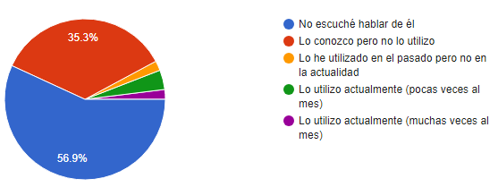
LENGUAJE R
- Lenguaje y entorno de software libre orientado a estadística
- Open source y multiplapaforma
- Numerosas librerías de extensión (paquetes)
- Amplia y activa comunidad de usuarios
- Interfaz por línea de comandos
LENGUAJE R
- Desarrollado por Ross Ihaka y Robert Gentleman de la Universidad de Auckland, Nueva Zelanda en 1995
- Inspirado en el lenguaje comercial S y S-plus usados desde los años 70
- El lenguaje R se basa en funciones con argumentos, de sintaxis muy precisa, que interactúan con estructuras de datos.
- Además de las funciones básicas se incorporan otras a partir de paquetes. Al día de hoy existen 21582 paquetes publicados en CRAN.
LENGUAJE R
El instalador del lenguaje R trae incorporado un editor denominado R GUI que se visualiza cuando ejecutamos el acceso directo R 4.4.1:
LENGUAJE R
Existen otros editores, o mejor llamados, entornos de desarrollo integrado (IDE - Integrated Development Environment ) como:
RStudio (open source - Posit)
VS Code (Visual Studio Code - Microsoft)
Positron (open source - Posit - en desarrollo)
R-COMMANDER
- Interfaz gráfica con menúes desplegables y ventanas (Point-and-Click)
- Acceso a script con funciones (ventana de instrucciones)
- Posibilidad de extender con plugins (paquetes especiales)
- Desarrollada y mantenida por John Fox, profesor emérito de la Facultad de Ciencias Sociales de la Universidad de McMaster - Ontario, Canadá.
DESCARGA E INSTALACIÓN
Descargamos el instalador de R desde https://cran.r-project.org/
Instalamos el software R ejecutando el instalador R-4.4.1-win.exe
Ingresamos al R e instalamos el paquete Rcmdr, mediante
install.packages("Rcmdr", dependencies = T)Ejecutamos RCommander ejecutando
library(Rcmdr)Ejecutamos
Commander()si queremos volver a entrar desde R Gui.
Vamos a mostrarlo…
ENTORNO PRINCIPAL
ENTORNO Y MENÚES
- Fichero: para abrir archivos con instrucciones a ejecutar, o para guardar datos, resultados, sintaxis, etc.
- Editar: las típicas opciones para cortar, pegar, borrar, etc.
- Datos: utilidades para trabajar con datos (creación de datos, importación de variados formatos, recodificación de variables, etc.)
- Estadísticos: ejecución de métodos estadísticos
- Gráficas: gráficos con estética R base (graphics)
ENTORNO Y MENÚES
Modelos: gestión modelos de regresión específicos para el análisis de datos.
Distribuciones: probabilidades, cuantiles y gráficos de las distribuciones de probabilidad más habituales.
Herramientas: carga de librerías (paquetes) y opciones del entorno.
Ayuda: ayuda y documentación sobre R-commander
KMggplot2: gráficos modernos basados en paquete ggplot2. Curvas de Kaplan-Meier, histogramas, Q-Q plot, etc.
ARCHIVOS DE SISTEMA
- Archivo de instrucciones (scripts de extensión .R)
- Archivo de resultados (salidas de consola de extensión .txt)
- Entorno de trabajo (formato propio de extensión .RData)
- Exportación de gráficos bajo estándar .PNG
IMPORTACIÓN DE DATOS
RCommander permite importar un variado conjunto de formatos de archivos de datos:
- Texto plano (.txt o .csv)
- SPSS
- SAS
- Minitab
- Stata
- Microsoft Excel
IMPORTACIÓN DE DATOS
DATOS
Los datos con los que trabajamos tienen una estructura que se caracteriza por:
- Tener forma de tabla, con columnas y filas.
- Una tabla representa a una sola unidad de análisis
- Las columnas contienen a las variables.
- Las filas representan las observaciones
- Cada variable (columna) tiene un tipo de dato para todas las filas.
DATOS
Orientación de variables y observaciones en una tabla “ordenada”:

TIPO DE DATOS
Las tipos de datos con lo que trabaja el lenguaje R son:
- Numérico (integer -int- o numeric -num-)
- 36, 45.6, -709
- Caracter (character -chr-)
- “A”, “Si”, “5”, “empleado”
- Factor (factor -fct-)
- “Alto”, “No”
- Lógico (logical -logi-)
TRUE,FALSE
- Fecha / hora (Date / datetime)
- “2024-10-30”, “2024-10-30 18:30:00”
TIPO DE DATO FACTOR
Son un tipo de dato que se emplea para trabajar con variables que tienen un conjunto fijo de valores posibles (niveles).
- Representan a variables categóricas y tienen etiquetas asociadas a valores enteros únicos (internos).
Pueden estar ordenados o desordenados.
Por defecto, los niveles se ordenan alfabéticamente.
SOBRE LOS DATOS

Las tablas de datos con las que trajaremos durante la cursada están ordenadas, depuradas y preprocesadas para sólo centrarnos en el análisis.
En la práctica, esto no ocurre y generalmente hay que dedicarle un largo tiempo al preproceso que nos lleva de los datos crudos a los datos limpios.
DATOS FALTANTES (NA)
El lenguaje R utiliza el valor reservado
NA(Not Available), que significa “No Disponible”, para representar datos faltantes, perdidos o omitidos.Este tipo de datos tiene comportamiento particular que obliga a un tratamiento especial.
En el marco de los modelos, cuando una variable tiene algún valor faltante (NA) en alguna observación, y participa del modelo de regresión, se omite automáticamente la observación completa.
IMPORTACIÓN DE DATOS
- Archivos de texto plano
- Extensión .txt o .csv
- Con cabeceras de etiquetas de nombre de variable
- Separados por comas (,) o punto y coma ;
- Revisar si existen múmeros con decimales y que separador utiliza
IMPORTACIÓN DE DATOS
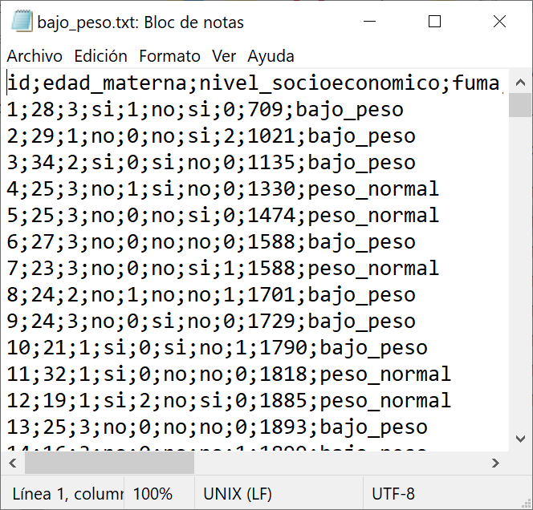
EXPLORACIÓN
Una tarea inicial, luego de haber importado una tabla de datos, es explorar su contenido.
La forma más sencilla de realizarla es solicitar que R nos muestre la estructura. Para esto, escribimos y Ejecutamos la siguiente línea de código:
EXPLORACIÓN
En la ventana de resultados visualizaremos la estructura de la tabla de datos:
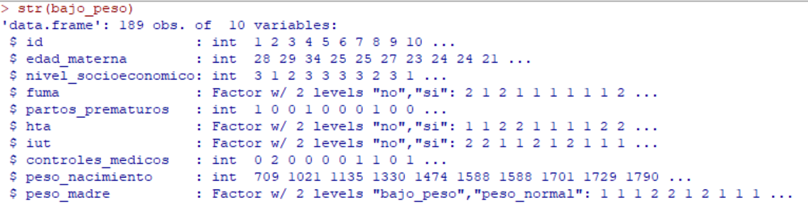DETECCIÓN DE VALORES NA
Otra exploración que realizamos al inicio es la detección de valores faltantes en las variables del conjunto de datos.
Pulsando sobre Estadísticos -> Resúmenes -> Número de observaciones ausentes.
GESTION DE DATOS
El menú Datos -> Modificar variables del conjunto de datos activo nos ofrece realizar las siguientes gestiones con datos:
- Recodificar variables
- Incorporar una nueva variable con valor calculado
- Convertir variables numéricas a factor
- Reordenar niveles de un factor
- Segmentar variable numérica
- Renombrar o eliminar variables
FACTORES
En situaciones donde la categoría de una variable cualitativa se codificó numéricamente es posible que necesitemos convertirla a factor antes de trabajar con ella.
FACTORES
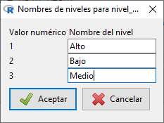
FACTORES
Como en todas las situaciones donde utilicemos algún opción del menú, encontraremos en la ventana de instrucciones y en resultados la ejecución del código de R correspondiente:
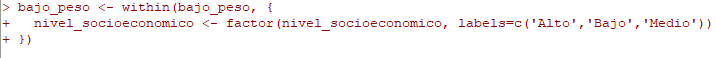
Para verificar el cambio a factor de la variable y sus niveles, podemos escribir directamente en la ventana de instrucciones levels(nombre_datos$nombre_variable)
FACTORES
Otra tarea habitual, sobre todo en los modelados estadísticos, es reordenar niveles de un factor (necesario para definir el nivel de referencia de un predictor categórico).
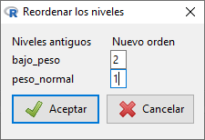
FACTORES
Visualizaremos el código en la ventana de instrucciones y en resultados:
Verificamos el reordenamiento de niveles: levels(nombre_datos$nombre_variable)
Observamos que los niveles cambiaron y que no siguen el ordenamiento alfabetico predeterminado.
ESTADISTICOS
Las funciones para el análisis estadístico las encontramos en el menú
ESTADISTICOS
Algunas de las opciones que usaremos durante la cursada son:
ESTADISTICOS
Estos menúes nos van a permitir explorar estadísticamente los datos y conocer la distribución de las variables de interés a partir de:
- Resumir datos mediante estadísticos
- Resumir datos mediante gráficos
- Detectar patrones y relaciones entre variables
- Detectar valores atípicos (outlier) e influyentes
ESTADISTICOS
Por ejemplo, vamos a poder describir una variable mediante:
Cuantitativas
- Tendencial central: media, mediana
- Dispersión: varianza, desvío estándar, intervalo intercuartílico
- Posición: mínimo, máximo, quartiles
Cualitativas
- Tabla de frecuencias absolutas
- Tabla de frecuencias relativas
ESTADISTICOS
Cuando ajustemos modelos de regresión utilizaremos las opciones:
GRAFICOS
Los gráficos estándar que RCommander trae incorporados se basan en el sistema gráfico base del lenguaje R. Existe un sistema más moderno proveniente de la gramática de gráficos incluido en un paquete que se denomina ggplot2.
El plugin KMggplot2 extendiende las funciones de RCommander e incluye también curvas de Kaplan Meier que verán en el módulo siguiente con el análisis de supervivencia.
Este plugin, y probablemente algunos otros que necesitarán en el futuro, debe instalarse antes de activarlo en RCommander.
PLUGINS
Los plugins de RCommander son librerías del lenguaje R que descargaremos desde el sitio oficial CRAN.
Todos los paquetes que son plugin de RCommander comienzan con “RcmdrPlugin.”.
Actualmente hay 34 extensiones en forma de plugin para RCommander.
El código para instalarlos es similar al de cualquier paquete de R.
PLUGINS
Luego, cuando ingresamos en el RCommander debemos activarlo:
PLUGINS
A continuación el sistema nos solicitará reinicar el RCommander y cuando vuelva a abrirse aparecerá el menú asociado al plugin activado.
GRAFICOS
La extensión KMggplot2 nos va a permitir hacer:
- Histogramas (variable cuantitativa según categórica)
- Q-Q plot (para ajuste de distintas distribuciones)
- Box plot / violin plot (variable cuantitativa según categórica)
- Scatter plot (dos variables cuantitativas)
- Scatter matrix (tres o más variables cuantitativas)
- Line chart (dos variables cuantitativas)
- Gráfica de sectores (variable categórica)
- Bar chart (variable categórica)
- Curva de Kaplan Meier (análisis de supervivencia)
GRAFICOS
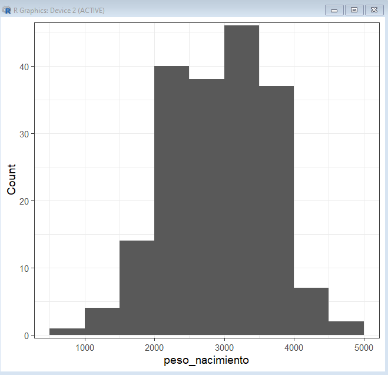
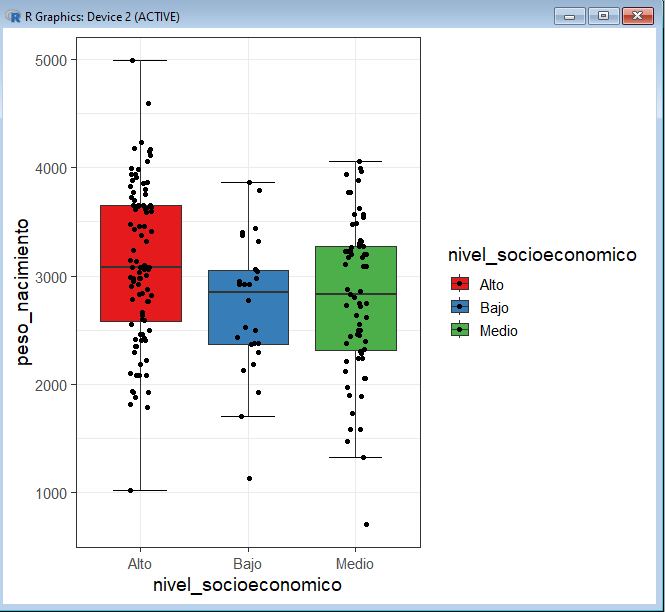
GRAFICOS
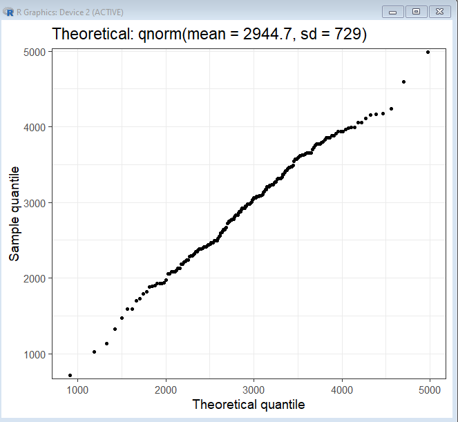
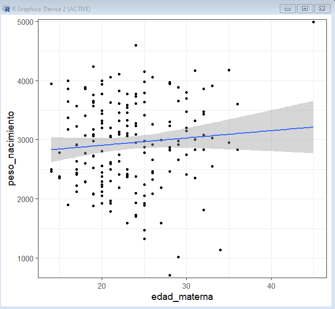
GRAFICOS
En el marco de la exploración descriptiva de los datos, es muy valiosa la información sobre la distribución de una variable cuantitativa que nos brindan los boxplots.

GRAFICOS
Otro gráfico importante es el Q-Q plot (gráfico quantil-quantil) para ver si la distribución de la variable cuantitativa se aproxima a una distribución teórica (Normal).
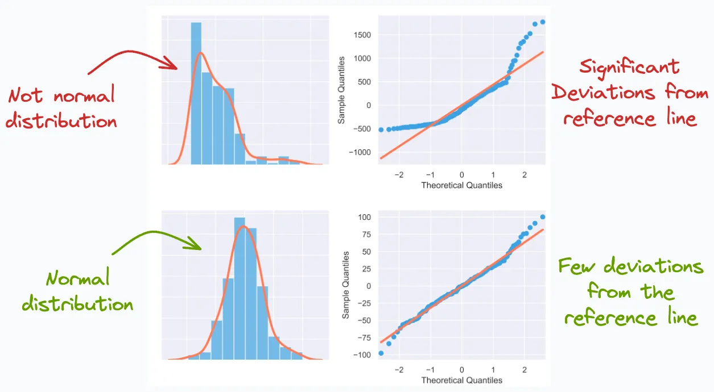MODELOS
Los modelos se ajustan desde la opción del menú
Estadísticos -> Ajuste de modelosLa sintaxis en R para los modelos estadísticos se basa en la función genérica formula.
Se pueden ajustar varios modelos de forman secuencial vinculándose a nombres diferentes.
Luego se gestionan desde el menú
Modelosindicando previamente cuál es el nombre del modelo activo.
MODELOS
La sintaxis fórmula se utiliza para construir expresiones compactas utilizando como operador el caracter virgulilla ~
La expresión básica es y ~ modelo y se interpreta como que la variable de respuesta y está modelada por un predictor lineal especificado simbólicamente por modelo.
El modelo esta compuesto por uno o más términos (variables explicativas y/o predictoras) separadas por operadores aditivos +
Para otros términos, como el de interacción, se utiliza el operador multiplicativo *
GUARDADO DE ARCHIVOS
Es conveniente guardar los archivos de trabajo de la sesión de RCommander
Archivo de instrucciones (
.R)Se puede cargar y volver a ejecutar en el futuro.
Archivo de resultados (
.txt)Podemos copiar resultados desde fuera de RCommander
Las opciones se encuentra en el menú
Ficheros
EXPORTACION DE DATOS
- Desde
Datos -> Conjunto de datos activos -> Exportar el conjunto de datos activo…exportamos la tabla de datos con las modificaciones y/o agregados que realizamos durante la gestión con RCommander.
EXPORTACION DE DATOS
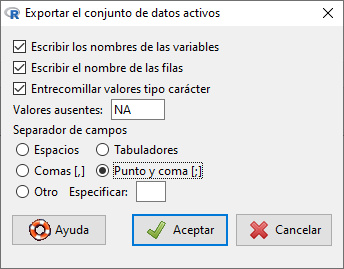RESUMEN
RESUMEN